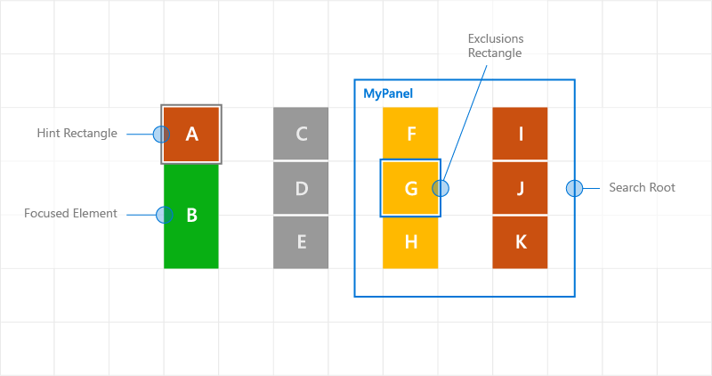
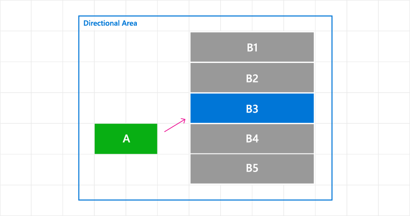

Programmatic focus navigation

To move focus programmatically in your Windows application, you can use either the FocusManager.TryMoveFocus method or the FindNextElement method.
TryMoveFocus attempts to change focus from the element with focus to the next focusable element in the specified direction, while FindNextElement retrieves the element (as a DependencyObject) that will receive focus based on the specified navigation direction (directional navigation only, cannot be used to emulate tab navigation).
Note
We recommend using the FindNextElement method instead of FindNextFocusableElement because FindNextFocusableElement retrieves a UIElement, which returns null if the next focusable element is not a UIElement (such as a Hyperlink object).
Find a focus candidate within a scope
You can customize the focus navigation behavior for both TryMoveFocus and FindNextElement, including searching for the next focus candidate within a specific UI tree or excluding specific elements from consideration.
This example uses a TicTacToe game to demonstrate the TryMoveFocus and FindNextElement methods.
<StackPanel Orientation="Horizontal"
VerticalAlignment="Center"
HorizontalAlignment="Center" >
<Button Content="Start Game" />
<Button Content="Undo Movement" />
<Grid x:Name="TicTacToeGrid" KeyDown="OnKeyDown">
<Grid.ColumnDefinitions>
<ColumnDefinition Width="50" />
<ColumnDefinition Width="50" />
<ColumnDefinition Width="50" />
</Grid.ColumnDefinitions>
<Grid.RowDefinitions>
<RowDefinition Height="50" />
<RowDefinition Height="50" />
<RowDefinition Height="50" />
</Grid.RowDefinitions>
<myControls:TicTacToeCell
Grid.Column="0" Grid.Row="0"
x:Name="Cell00" />
<myControls:TicTacToeCell
Grid.Column="1" Grid.Row="0"
x:Name="Cell10"/>
<myControls:TicTacToeCell
Grid.Column="2" Grid.Row="0"
x:Name="Cell20"/>
<myControls:TicTacToeCell
Grid.Column="0" Grid.Row="1"
x:Name="Cell01"/>
<myControls:TicTacToeCell
Grid.Column="1" Grid.Row="1"
x:Name="Cell11"/>
<myControls:TicTacToeCell
Grid.Column="2" Grid.Row="1"
x:Name="Cell21"/>
<myControls:TicTacToeCell
Grid.Column="0" Grid.Row="2"
x:Name="Cell02"/>
<myControls:TicTacToeCell
Grid.Column="1" Grid.Row="2"
x:Name="Cell22"/>
<myControls:TicTacToeCell
Grid.Column="2" Grid.Row="2"
x:Name="Cell32"/>
</Grid>
</StackPanel>
private void OnKeyDown(object sender, KeyRoutedEventArgs e)
{
DependencyObject candidate = null;
var options = new FindNextElementOptions ()
{
SearchRoot = TicTacToeGrid,
XYFocusNavigationStrategyOverride = XYFocusNavigationStrategyOverride.Projection
};
switch (e.Key)
{
case Windows.System.VirtualKey.Up:
candidate =
FocusManager.FindNextElement(
FocusNavigationDirection.Up, options);
break;
case Windows.System.VirtualKey.Down:
candidate =
FocusManager.FindNextElement(
FocusNavigationDirection.Down, options);
break;
case Windows.System.VirtualKey.Left:
candidate = FocusManager.FindNextElement(
FocusNavigationDirection.Left, options);
break;
case Windows.System.VirtualKey.Right:
candidate =
FocusManager.FindNextElement(
FocusNavigationDirection.Right, options);
break;
}
// Also consider whether candidate is a Hyperlink, WebView, or TextBlock.
if (candidate != null && candidate is Control)
{
(candidate as Control).Focus(FocusState.Keyboard);
}
}
Use FindNextElementOptions to further customize how focus candidates are identified. This object provides the following properties:
- SearchRoot - Scope the search for focus navigation candidates to the children of this DependencyObject. Null indicates to start the search from the root of the visual tree.
Important
If one or more transforms are applied to the descendants of SearchRoot that place them outside of the directional area, these elements are still considered candidates.
- ExclusionRect - Focus navigation candidates are identified using a "fictitious" bounding rectangle where all overlapping objects are excluded from navigation focus. This rectangle is used only for calculations and is never added to the visual tree.
- HintRect - Focus navigation candidates are identified using a "fictitious" bounding rectangle that identifies the elements most likely to receive focus. This rectangle is used only for calculations and is never added to the visual tree.
- XYFocusNavigationStrategyOverride - The focus navigation strategy used to identify the best candidate element to receive focus.
The following image illustrates some of these concepts.
When element B has focus, FindNextElement identifies I as the focus candidate when navigating to the right. The reasons for this are:
- Because of the HintRect on A, the starting reference is A, not B
- C is not a candidate because MyPanel has been specified as the SearchRoot
- F is not a candidate because the ExclusionRect overlaps it

Custom focus navigation behavior using navigation hints
Navigation focus events
NoFocusCandidateFound event
The UIElement.NoFocusCandidateFound event is fired when the tab or arrow keys are pressed and there is no focus candidate in the specified direction. This event is not fired for TryMoveFocus.
Because this is a routed event, it bubbles from the focused element up through successive parent objects to the root of the object tree. This lets you handle the event wherever appropriate.
Here, we show how a Grid opens a SplitView when the user attempts to move focus to the left of the left-most focusable control (see Designing for Xbox and TV).
<Grid NoFocusCandidateFound="OnNoFocusCandidateFound">
...
</Grid>
private void OnNoFocusCandidateFound (
UIElement sender, NoFocusCandidateFoundEventArgs args)
{
if(args.NavigationDirection == FocusNavigationDirection.Left)
{
if(args.InputDevice == FocusInputDeviceKind.Keyboard ||
args.InputDevice == FocusInputDeviceKind.GameController )
{
OpenSplitPaneView();
}
args.Handled = true;
}
}
GotFocus and LostFocus events
The UIElement.GotFocus and UIElement.LostFocus events are fired when an element gets focus or loses focus, respectively. This event is not fired for TryMoveFocus.
Because these are routed events, they bubble from the focused element up through successive parent objects to the root of the object tree. This lets you handle the event wherever appropriate.
GettingFocus and LosingFocus events
The UIElement.GettingFocus and UIElement.LosingFocus events fire before the respective UIElement.GotFocus and UIElement.LostFocus events.
Because these are routed events, they bubble from the focused element up through successive parent objects to the root of the object tree. As this happens before a focus change takes place, you can redirect or cancel the focus change.
GettingFocus and LosingFocus are synchronous events so focus won’t be moved while these events are bubbling. However, GotFocus and LostFocus are asynchronous events, which means there is no guarantee that focus won’t move again before the handler is executed.
If focus moves through a call to Control.Focus, GettingFocus is raised during the call, while GotFocus is raised after the call.
The focus navigation target can be changed during the GettingFocus and LosingFocus events (before focus moves) through the GettingFocusEventArgs.NewFocusedElement property. Even if the target is changed, the event still bubbles and the target can be changed again.
To avoid reentrancy issues, an exception is thrown if you try to move focus (using TryMoveFocus or Control.Focus) while these events are bubbling.
These events are fired regardless of the reason for the focus moving (including tab navigation, directional navigation, and programmatic navigation).
Here is the order of execution for the focus events:
- LosingFocus If focus is reset back to the losing focus element or TryCancel is successful, no further events are fired.
- GettingFocus If focus is reset back to the losing focus element or TryCancel is successful, no further events are fired.
- LostFocus
- GotFocus
The following image shows how, when moving to the right from A, the XYFocus chooses B4 as a candidate. B4 then fires the GettingFocus event where the ListView has the opportunity to reassign focus to B3.

Changing focus navigation target on GettingFocus event
Here, we show how to handle the GettingFocus event and redirect focus.
<StackPanel Orientation="Horizontal">
<Button Content="A" />
<ListView x:Name="MyListView" SelectedIndex="2" GettingFocus="OnGettingFocus">
<ListViewItem>LV1</ListViewItem>
<ListViewItem>LV2</ListViewItem>
<ListViewItem>LV3</ListViewItem>
<ListViewItem>LV4</ListViewItem>
<ListViewItem>LV5</ListViewItem>
</ListView>
</StackPanel>
private void OnGettingFocus(UIElement sender, GettingFocusEventArgs args)
{
//Redirect the focus only when the focus comes from outside of the ListView.
// move the focus to the selected item
if (MyListView.SelectedIndex != -1 &&
IsNotAChildOf(MyListView, args.OldFocusedElement))
{
var selectedContainer =
MyListView.ContainerFromItem(MyListView.SelectedItem);
if (args.FocusState ==
FocusState.Keyboard &&
args.NewFocusedElement != selectedContainer)
{
args.TryRedirect(
MyListView.ContainerFromItem(MyListView.SelectedItem));
args.Handled = true;
}
}
}
Here, we show how to handle the LosingFocus event for a CommandBar and set focus when the menu is closed.
<CommandBar x:Name="MyCommandBar" LosingFocus="OnLosingFocus">
<AppBarButton Icon="Back" Label="Back" />
<AppBarButton Icon="Stop" Label="Stop" />
<AppBarButton Icon="Play" Label="Play" />
<AppBarButton Icon="Forward" Label="Forward" />
<CommandBar.SecondaryCommands>
<AppBarButton Icon="Like" Label="Like" />
<AppBarButton Icon="Share" Label="Share" />
</CommandBar.SecondaryCommands>
</CommandBar>
private void OnLosingFocus(UIElement sender, LosingFocusEventArgs args)
{
if (MyCommandBar.IsOpen == true &&
IsNotAChildOf(MyCommandBar, args.NewFocusedElement))
{
if (args.TryCancel())
{
args.Handled = true;
}
}
}
Find the first and last focusable element
The FocusManager.FindFirstFocusableElement and FocusManager.FindLastFocusableElement methods move focus to the first or last focusable element within the scope of an object (the element tree of a UIElement or the text tree of a TextElement). The scope is specified in the call (if the argument is null, the scope is the current window).
If no focus candidates can be identified in the scope, null is returned.
Here, we show how to specify that the buttons of a CommandBar have a wrap-around directional behavior (see Keyboard Interactions).
<CommandBar x:Name="MyCommandBar" LosingFocus="OnLosingFocus">
<AppBarButton Icon="Back" Label="Back" />
<AppBarButton Icon="Stop" Label="Stop" />
<AppBarButton Icon="Play" Label="Play" />
<AppBarButton Icon="Forward" Label="Forward" />
<CommandBar.SecondaryCommands>
<AppBarButton Icon="Like" Label="Like" />
<AppBarButton Icon="ReShare" Label="Share" />
</CommandBar.SecondaryCommands>
</CommandBar>
private void OnLosingFocus(UIElement sender, LosingFocusEventArgs args)
{
if (IsNotAChildOf(MyCommandBar, args.NewFocussedElement))
{
DependencyObject candidate = null;
if (args.Direction == FocusNavigationDirection.Left)
{
candidate = FocusManager.FindLastFocusableElement(MyCommandBar);
}
else if (args.Direction == FocusNavigationDirection.Right)
{
candidate = FocusManager.FindFirstFocusableElement(MyCommandBar);
}
if (candidate != null)
{
args.NewFocusedElement = candidate;
args.Handled = true;
}
}
}